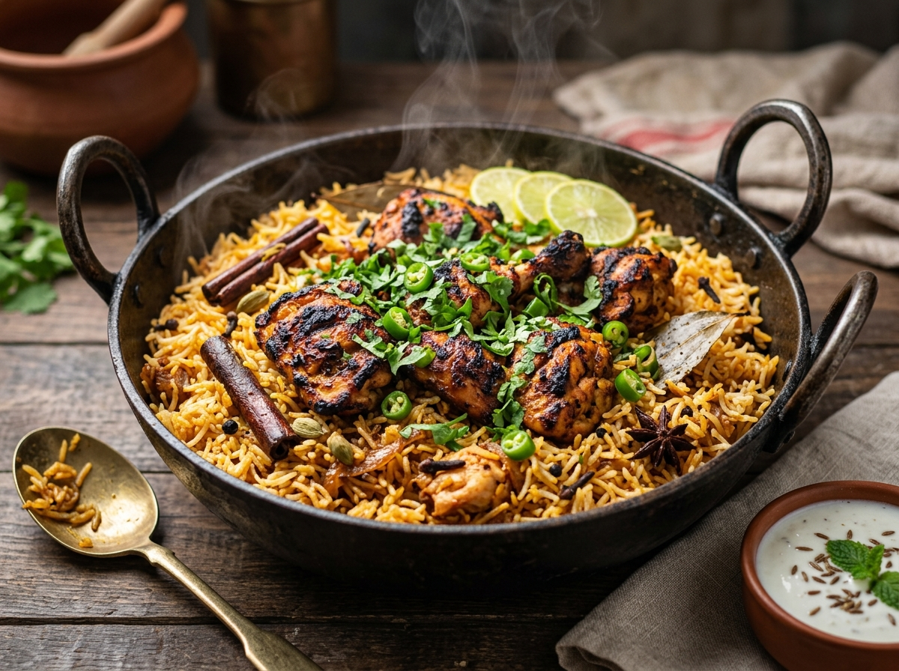

High Protein
One-Pot Tandoori Chicken Rice
Succulent spiced tandoori chicken thighs cooked atop aromatic roasted whole-spice rice in a single pot. Recipe by @withanushkarawat.
Prep Time
15 mins
Cook Time
25 mins
Total Time
40 mins
Servings
3
Calories
440 kcal
Instructions
- Marinate chicken: In a mixing bowl, combine the chicken thighs with yogurt, ginger-garlic paste, salt, turmeric, coriander powder, garam masala, red chilli powder, fresh coriander, slit green chillies, lime juice, and 1 tbsp ghee. Marinate for 3–4 hours (or overnight in the fridge) for the best depth of flavor.
- Roast rice: Heat ½ tbsp butter or ghee in a pan on medium heat. Add whole peppercorns, cinnamon stick, cloves, cardamom, and dried red chilli. Add the soaked and drained rice, ¼ tsp turmeric, and ½ tsp salt. Roast for 4 minutes until fragrant.
- Layer chicken: Pour ½ cup water into the pan over the rice, then arrange the marinated chicken pieces evenly on top. Pour the remaining ½ cup water around the edges.
- Cook: Cover with a tight lid, reduce the heat to low, and cook for 25 minutes until the rice is tender and the chicken is fully cooked and juicy.
- Garnish & Serve: Garnish with fresh chopped coriander and serve hot with raita or salad. 🍗🍚